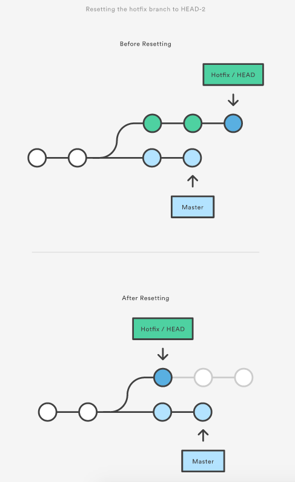
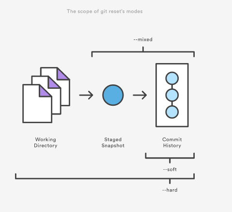
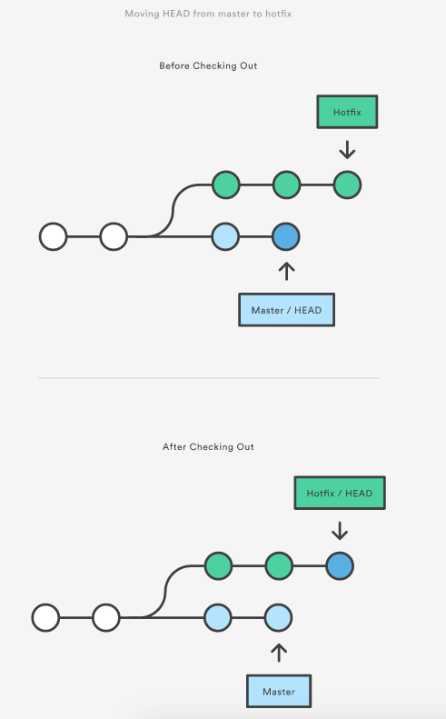
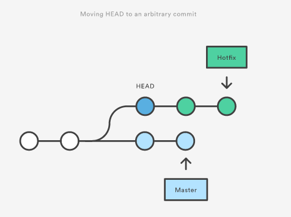
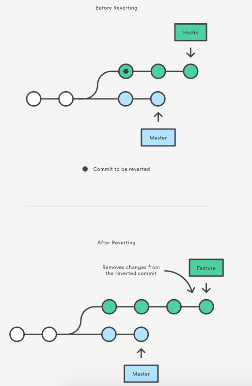
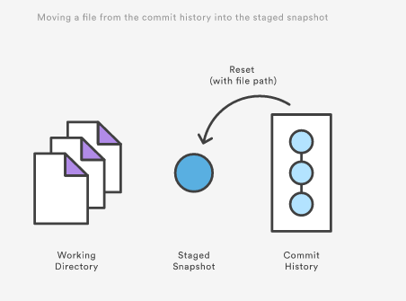
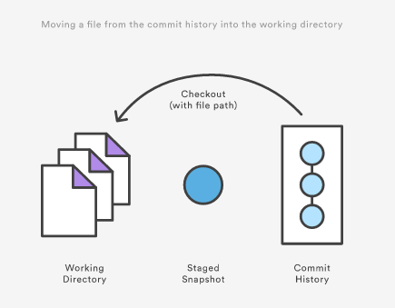

[译]reset, checkout和revert
git reset, git checkout, git revert能让你撤销你本地仓储的一些修改, 前两种命令可以作用于commit或者一个文件.
Commit级别的操作
注意了git revert只能作用于commit不能作用于文件.
reset
在commit级别, reset把你的branch的顶端移动到另外一个commit. 可以用来删除你当前分支的commit. 例如, 下面的命令把hotfix分支往后后退两次.
git checkout hotfix git reset HEAD~2
hotfix最近两个commit成了dangling commit, 这意味在下次git指定垃圾回收的时候可以删除他们.

这种reset的用法可以用来撤销没有被共享给其他人的修改.
除了能移动当前的分支, 还可以变更stage区的快照,修改工作目录.
- --soft stage区的快照和工作目录都不会有任何变化.
- --mixed stage区的快照更新匹配到指定的commit的状态, 工作目录不会有修改. 这个是默认的option.
- --hard stage区的快照和工作目录都后被更新到指定的commit的状态

上面三个标记经常和HEAD一起使用. git reset --mixed HEAD 会作用于stage区, 但是不会影响工作目录的修改. 如果你想完全的扔掉没有commit的修改, 你可以使用git reset --hard HEAD. 这个是git reset最常用的两种方法.
当你传递一个commit给git reset的时候要非常小心, 因为这会修改当前分支的历史. 当这些历史已经被push了时, 这样做非常不好.
checkout
当你传递一个分支名给checkout, 会切换分支.
git checkout hotfix
上面的命令移动HEAD到另外一个分支, 更新你的工作目录.

你还可以checkout commit. 会将HEAD指向你指定的commit. 下面的命令checkout到当前commit的爷爷:
git checkout HEAD~2

这用来检查你项目的老版本非常有用. 因为没有任何一个分支指向当前HEAD, 所以checkout commit之后处于一个detached HEAD的状态. 在这种状态下添加的新的commit是多其它所有的分支不可见的. 所以, 你应该在添加commit到detached HEAD之前应该新建一个分支.
revert
revert通过新建一个新的commit来撤销commit. 这是一种安全的撤销方式. 下面的例子通过新建一个新的commit来撤销倒数第三个commit.
git checkout hotfix git revert HEAD~2

git revert应该被用于撤销一个公共的分支, git reset用来撤销私有的分支.
文件级别的操作
git reset和git checkout都可以接受一个文件路径做为参数. 当指定了一个文件的路径的时候, reset和checkout只操作一个单一的文件.
reset
git reset更新stage区的快照去匹配指定commit时候的版本. 下面的命令把foo.py恢复到2nd-to-last commit的时候的状态并放入stage区:
git reset HEAD~2 foo.py
运行git reset HEAD foo.py会把stage区的foo.py删除. 工作目录下面的修改不会发生变化.

--soft, --mixed, --hard标记在git reset文件的时候不起任何作用, stage的快照总是会被更新, 工作目录不会被更新到.
checkout
checkout 有点类似于reset, 但是checkout不会更新stage区, 而是更新工作目录.

下面的命令将工作区中的foo.py的内容更新为倒数第三次commit的内容:
git checkout HEAD~2 foo.py
git checkout HEAD foo.py的效果就是丢弃foo.py没有在stage区的修改. 效果和git reset HEAD --hard一样, 但是checkout只作用于一个单独的文件.
总结
| Command | Scope | Common use case |
| git reset | Commit-level | 丢弃私有分支的commit或丢弃没有commit的修改 |
| git reset | File-level | unstage一个文件 |
| git checkout | Commit-level | 切换分支或检查一个老的快照 |
| git checkout | File-level | 丢弃工作目录的修改 |
| git revert | Commit-level | 撤销公共分支的commit |
| git revert | File-level | revert没有文件级别的操作 |